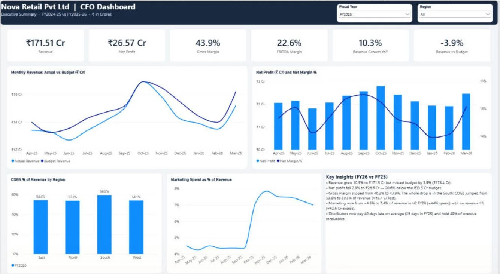
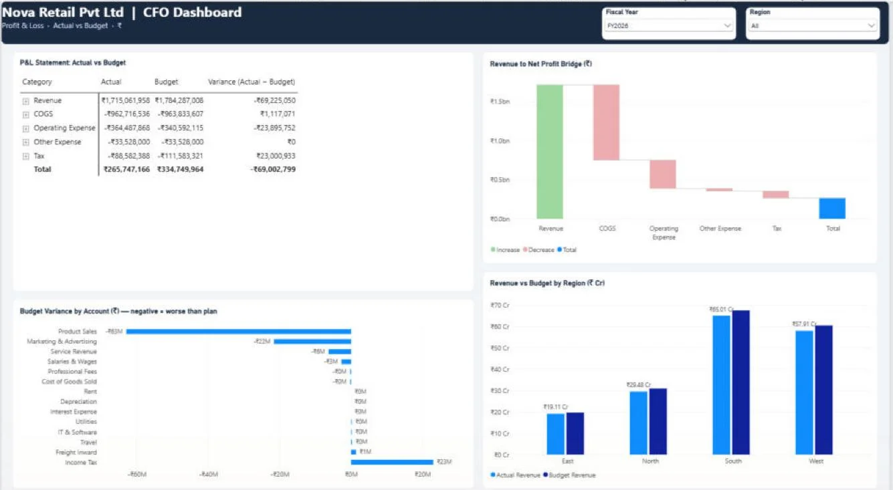
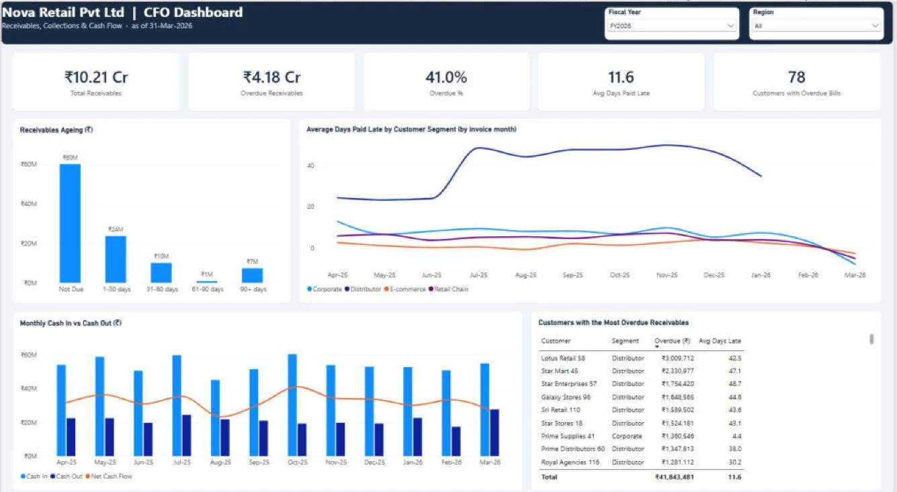

Finance · Power BI · Budget & cash flow
Finance / CFO Dashboard
Revenue grew 10% but net profit fell 3%. Why, and what should the CFO do? I built a three-page Power BI report that answers that, and also tracks budget variance, receivables and cash flow.
- +10.3%revenue growth FY26
- −2.8%net profit despite that growth
- ~₹6 Cr/yrprofit the fixes can recover
- 48DAX measures

The problem
Nova Retail Pvt Ltd, a fictional retailer with six branches across India, grew revenue from ₹155.5 Cr to ₹171.5 Cr in FY2025-26. Net profit still went down, and the company missed its profit budget by 20.6%. The CFO wanted to know where margin was leaking, which accounts were off budget, and whether customers were paying on time.
The data
A reproducible synthetic dataset covering two Indian fiscal years (April to March): a monthly general ledger and budget by branch and account, 5,128 customer invoices with due and paid dates, and 2,529 supplier bills. The generator builds in realistic seasonality and the business problems the report has to find.
Approach
Data model
A star schema with 4 fact tables (ledger, budget, invoices, bills) and 6 dimension tables, plus a DAX date table with fiscal year, quarter and month.
Power Query
All sources load through one folder parameter, so the report refreshes on any machine.
DAX measures
48 measures in display folders: P&L and margins, budget variance, year-on-year and fiscal year-to-date, receivables ageing, and cash flow by paid date using inactive relationships with USERELATIONSHIP.
Report design
Three pages (Executive Summary, P&L & Budget, Receivables & Cash) with synced fiscal-year and region slicers.
Version control
Saved in PBIP/TMDL format, so the model and every visual are text files with a reviewable Git history.
What I found
- Gross margin fell from 46.2% to 43.9%. The whole drop is in the South region, where cost of goods rose from 53.8% to 59.5% of revenue. The other regions stayed at about 54%.
- Marketing jumped from about 4.5% to 7.4% of revenue in the second half of FY26 (+44% spend), with no matching rise in sales.
- Distributors now pay 40 days late on average (25 days in FY25) and hold about half of all overdue receivables. Other customer types pay within about 8 days of the due date.
| Priority | Action | Estimated impact |
|---|---|---|
| 1 | Renegotiate South supplier contracts and review pricing to bring COGS back to ~54% | ~₹3.7 Cr / year |
| 2 | Cap marketing at 5% of revenue and approve campaigns on ROI | ~₹2.6 Cr / year |
| 3 | Tighten distributor credit terms and stop supply beyond 60 days overdue | Frees cash from ₹5.8 Cr overdue |
Dashboard pages



The key insight
Headline growth hid two separate problems. Revenue was up, so the business looked healthy, but cost of goods in one region and unplanned marketing spend absorbed all of the extra gross profit. Fixing those two items recovers about ₹6 Cr a year, which closes most of the ₹6.9 Cr gap to the profit budget.
Limitations & next steps
- The data is synthetic, built to mirror real retail finance patterns; the model and measures work the same on a real ledger export.
- Next: add a 13-week cash-flow forecast and row-level security so each regional manager sees only their branches.